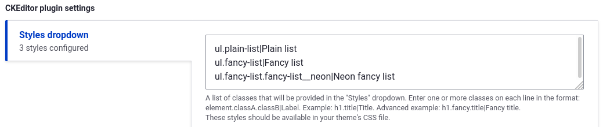
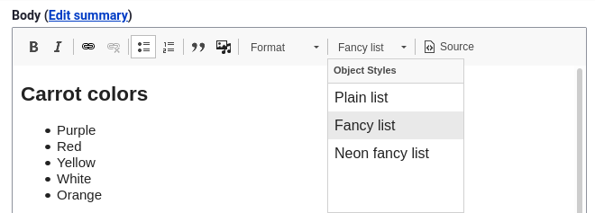

Build Back Better - with the Migrate API
Benji Fisher
May 27, 2022 - DrupalCamp NJ
Introduction
About me
- Benji Fisher
- @benjifisher on d.o
- @benjifisher on GitHub
- @benjifisher on GitLab
- @benji17fisher on Twitter
Migration subsystem, Usability group, Security team (provisional member)
About Fruition
Build. Grow. Protect.
- Digital Marketing
- Website Design
- Development
- Security & Hosting
Follow along
Find a link to this presentation on my GitLab Pages:
Outline
- Introduction
- Bringing Data Into Drupal
- Migrate API Introduction
- Examples
- Use Editor styles
- Structure unstructured content
- Update links in body text
- Update from Drupal 7 Media
- Conclusion
Bringing Data Into Drupal
Upgrading from Drupal 6 or Drupal 7
I need to update my Drupal 6 site. Better late than never!
- Q: What tool will you use?
- A: The Migrate API
Upgrading from other systems
I am getting tired of WordPress, but I have all these posts that I want to keep. How can I switch to Drupal?
- Q: What tool will you use?
- A: The Migrate API
Recurring imports (feeds)
I need to create Drupal content every hour from an external Atom feed (or XML/JSON/SOAP/CSV)
- Q: What tool will you use?
- A: The Migrate API
Did anyone say “Feeds module”?
Restructure a live site
I need to change the structure of my live Drupal site: add/remove a field, move field data to linked Paragraphs, …
- Q: What tool will you use?
- A: It depends. Use the Migrate API if you
- need to track old/new entity IDs
- have complex dependencies
- can use the tools it provides
Migrate API Introduction
One project, many migrations
- Each migration has one source: SQL, CSV, XML, …
- Each migration creates one entity type:
- node
- media
- taxonomy term
- user
- …
- A single XML file can be the source of several entity types, several migrations
- A site upgrade can have dozens of migrations
One migration, three stages
Three stages: Extract, Transform, Load (ETL)
- Extract (source plugin): one per migration
- Transform (process plugins): one or more per field/property
- Load (destination plugin): one per migration
Quiz: which stage is the most fun?
Transform/process: apply filters
Filter pipelines:
- Bash:
git branch --merged | grep feature | xargs git branch -d - Twig:
list | map(item => item|lower) | join(', ')
Each step gets its input from the previous one.
The Transform/Process stage of the Migrate API works the same way.
Process plugins
Drupal core and contrib modules provide many filters, or process plugins.
Most are configurable.
Learning to use them and combine them into pipelines takes some practice.
Process pipeline (example)
The Migrate API uses YAML to describe pipelines. (explanation of this example)
DOM processing
Convert a text field (HTML string) to a DOMDocument object, process it, and save it as a string:
process:
'body/value':
- plugin: dom
method: import
source: 'body/0/value'
# Other plugins do their work here.
- plugin: dom
method: exportThe body/0/value bit is a short-cut. It is more
complicated for multi-valued fields.
XPath Examples
Use an XPath selector to identify one or more elements
in a DOMDocument object:
selector |
Matches |
|---|---|
//a |
all <a> elements |
//a[class="external"] |
all <a> elements with
class="external" |
//li[class="nav"]/a |
all <a> elements direct children of
<li class="nav"> |
Example: Use Editor styles
The Challenge
I have to import documentation pages from an external system. The documentation is formatted as HTML, but it does not have the magic CSS classes that my theme uses. How can I make it match the site style guide?
Editor styles


Apply styles based on XPath
Let’s hope the source HTML has some consistency. Then we can identify elements we want to style with an XPath expression and apply configured styles:
Example: Structure unstructured content
The Challenge
Every Person page starts with a job title in an
<h4>tag and a photo. How can I move those into separate fields, and keep the rest in the Body field?
Example:
Structure unstructured content: why?
- Q: Why is it better to have the job title and image in separate fields?
- Q: Were you planning to hide parts of the Body field with CSS?
- Q: Are People pages coming from a Drupal 7 site, WordPress, or an XML feed?
Job title in a separate field
When processing a Person page, use the dom_select
plugin:
Photo in a separate field
Getting the photo is similar:
- Use
dom_selectwithselector: //img/@src. - Once you have the image URL, copy the file and make a File entity.
- Do all that in a separate migration.
- Use
migration_lookupto get the File ID in the Person migration.
Remove elements from Body field
Once the job title and photo are in separate fields, remove them from the Body field:
The Challenge
In my Drupal 7 site, “About us” was
/node/6, but in the new site it is/node/136. A lot of Body fields have<a href="/node/6">About Us</a>. What can I do?
This is why Marco Villegas (@marvil07) and I wrote the
DOM process plugins. Thanks to Isovera and Pega Systems for letting us
donate the code to the Migrate Plus module.
Update links: lookup
The Migrate API keeps track of source and destination IDs. Use
migration_lookup to handle entity-reference fields:
process:
field_related_content:
- plugin: migration_lookup
source: field_related_content
migration:
- this_migration
- that_migrationPause and reflect.
Update links: body field
Use dom_migration_lookup to handle text fields:
Example: Update from Drupal 7 Media
The Challenge
I have a Drupal 7 site that uses the Media module. How do I migrate to Drupal 9?
Create files, then media
Standard migration: migrate files to files.
Custom migration: migrate files to media.
- Source (Extract): same as the standard migration
- Process (Transform): use
migration_lookupto find file ID from first step - Destination (Load): create Media, not Files
This works great for structured data (File fields).
Media tokens
Media tokens in text fields (Media and WYSIWYG modules)
Look at my kitten photo:
[[{"type": "media", "fid": 1909, ... }]]There’s a module for that: Media Migration (alpha)
Image tags
My kitten is even cuter!
<img src="/images/kitten.jpg" alt="cutest!" />There’s a module for that, too: Migrate Media Handler
Conclusion
Summary
- Introduction
- Bringing Data Into Drupal
- Migrate API Introduction
- Examples
- Use Editor styles
- Structure unstructured content
- Update links in body text
- Update from Drupal 7 Media
- Conclusion
What’s next
- Alternatives to
DOMDocument - Source plugin for JSON:API
- Source plugin for Drupal 7 field
- More granular processing of DOM nodes
References
- Benji’s slide decks
- Migrate API documentation on drupal.org
- Migrate Plus module home page
- Change record describing the DOMDocument-based plugins
- XPath documentation on MDN
- Process Pipelines on drupal.org
- Media Migration module
- Migrate Media Handler module
Questions
Copyleft

This slide deck by
Benji
Fisher is licensed under a
Creative
Commons Attribution-ShareAlike 4.0 International License.
Based on a work at
https://gitlab.com/benjifisher/slide-decks.